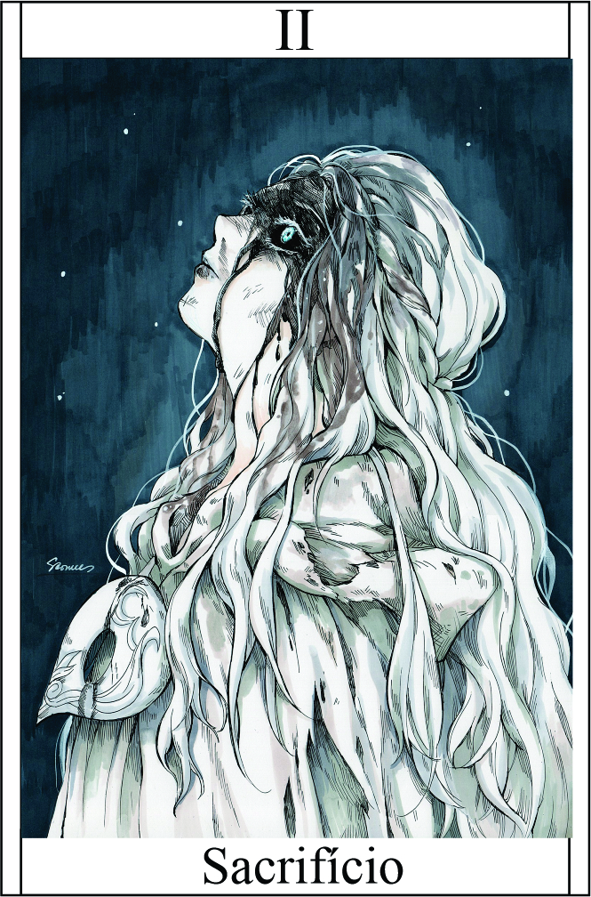

Sacrifício
Têndencia: Bom

Passiva:
Algo ser sacrificado 'valioso', o campeão pode obter um item valioso com um efeito especial. Você pode escolher entre as seguintes opções:
Amuleto da Cura:
Restaura 1d6 pontos de vida ao campeão sacrificado, proporcionando uma chance de sobrevivência prolongada.
Lâmina Sombria:
Concede ao campeão sacrificado um bônus de dano de 1d4, aumentando seu poder ofensivo durante o torneio.
Talismã da Agilidade:
Concede ao campeão sacrificado uma esquiva adicional ou uma ação extra em cada rodada de combate, aumentando sua mobilidade e versatilidade no campo de batalha. +1Legado 1 - Fome Sombria:
Você invoca uma Lamia Negra Poderosa, uma criatura lendária com incrível capacidade de perfurar praticamente qualquer coisa. Ela possui um poderoso ataque que causa dano de Força (F) + 5.
A Lamia Negra Poderosa é conhecida por sua força excepcional e sua habilidade de perfurar até as defesas mais robustas. Com um golpe poderoso, ela é capaz de superar armaduras e resistências, causando um dano significativo aos seus oponentes.
Força (F) + 5
Condição para ativar a habilidade:
É necessário receber o primeiro nome ou sacrificar algo valioso.
Legado 2 - Pacto das Sombras - Oferenda das Trevas:
Ao realizar o Pacto das Sombras, o campeão se entrega a entidades sombrias em troca de poder e proteção. As trevas se erguem ao seu redor, envolvendo-o em uma aura sinistra e fortalecendo suas habilidades.
Aumento de Poder:
Ao realizar o Pacto das Sombras, o campeão recebe um aumento significativo em seu poder, aumentando seus atributos e habilidades durante um curto período de tempo. Seus ataques causam dano adicional, suas defesas são reforçadas e suas habilidades são amplificadas.
Resistência às Trevas:
O campeão se torna momentaneamente imune aos efeitos negativos das trevas e das entidades sombrias, tornando-se mais resiliente a maldições, venenos e outras influências malignas.
Transformação Sombria:
Durante a ativação do Pacto das Sombras, o campeão assume uma forma parcialmente sombria, ganhando uma aparência aterrorizante e intimidadora. Isso pode causar medo nos inimigos, afetando sua coragem e habilidades de combate.Transformação Sombria:
Durante a ativação do Pacto das Sombras, o campeão assume uma forma parcialmente sombria, ganhando uma aparência aterrorizante e intimidadora. Isso pode causar medo nos inimigos, afetando sua coragem e habilidades de combate.
O Pacto das Sombras é um ato de desespero, onde o campeão se entrega à escuridão em busca de poder para superar desafios aparentemente insuperáveis. No entanto, essa habilidade traz consigo um alto preço, exigindo um sacrifício pessoal e trazendo à tona forças sombrias que podem ter consequências imprevisíveis.
Bônus: Protidão +1 | Intimidação + 1 | Esquiva + 1 | Dano adicional + 2 | Duração: 3 Roud (podendo aumentar + 1 se cair 6 no seu dado durante a transformação)
Condição para ativar a habilidade:
É necessário estar diante de uma situação de extrema adversidade ou perigo iminente, onde a sobrevivência do campeão e de seus aliados esteja em risco.
Restrição de uso:
A habilidade pode ser ativada uma vez por batalha, representando um pacto sombrio que exige um alto sacrifício.
Custo:
Consome 6 da sua vitalidade, e é recuperado até o 2° dia de sessão.
Legado 3 -Ascensão Sombria - Renascimento das Trevas:
Ao ativar a Ascensão Sombria, o campeão se torna um recipiente de poderes sombrios, renascendo das trevas com uma força renovada e uma determinação implacável. Essa habilidade permite que o campeão continue lutando mesmo quando tudo parece perdido.
Recupera toda a sua vida instantânea
Condição para ativar a habilidade:
É necessário estar à beira da derrota, com pouca vida e enfrentando uma ameaça iminente que coloque em risco a sobrevivência do campeão (5HP para baixo).
Restrição de uso:
Habilidade pode ser ativada apenas uma vez por batalha, representando um último esforço desesperado para reverter uma situação desfavorável.
Ao ativar a Ascensão Sombria, o campeão se torna um recipiente de poderes sombrios, renascendo das trevas com uma força renovada e uma determinação implacável. Essa habilidade permite que o campeão continue lutando mesmo quando tudo parece perdido.